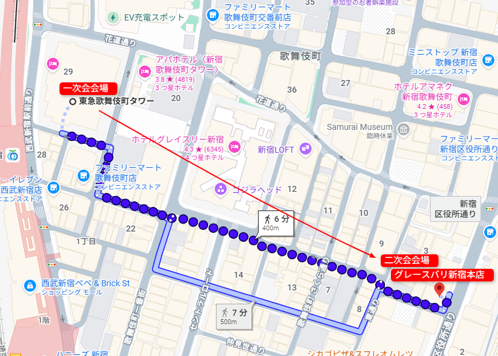

◆
◆
◆
◆
INAP VISION
Celebrating Ten Years
10
th
Anniversary
INAP VISION
Celebrating Ten Years
✦
✦
✦
10
th
Anniversary
10周年記念パーティー
◆
10年間の歩みは、社員お一人おひとりと、そのご家族に支えられてきました。
感謝を込めて、華やぎの一夜をご用意いたします。
Countdown
{{ days }}
days to go
Scroll
「INAPらしく」笑いあり、涙ありの
温かいアットホームなパーティーにします！
◆
ガチガチの堅い式典ではありませんが、単なる飲み会でもありません。
私たちが大切にしたい趣旨は以下の通りです。
01
感謝と軌跡
10年があったからこそ、イマがある！
これまでの10年間、いくつもの壁をみんなで乗り越えてきたからこそ、今のINAPがあります。まずはその歩みを全社員で振り返り、お互いの労をねぎらい合いましょう。
02
未来への決意
過去を懐かしむだけでなく、これからのINAPがどこを目指していくのか、未来へ向けてみんなで気持ちを一つにする節目とします。
03
INAPらしい一体感
全員が集結するせっかくの機会です。今回はあえて外部のお客様はお呼びせず、INAPを支えてきた「目の前の仲間たち」だけが集まる時間をつくりました。今日の主役は、ここにいる社員一人ひとりです。かしこまった挨拶ばかりではなく、みんなで笑って、時にはちょっとジーンとして、心から楽しめる時間にしたいと考えています。
これまでの10年をみんなで称え合い、次の未来へ向けて最高のエネルギーをチャージできる一日にしましょう！
皆さんと最高の時間を共有できることを、幹事会一同楽しみにしています！
Date
日時
2026年10月23日（金）
17:00 〜 20:00
会場HOTEL GROOVE SHINJUKU／SPACE EAST
対象プロパー社員とそのご家族
Dress Code
ドレスコード
結婚式の2次会風
普段より「ちょっとだけおしゃれ」な綺麗めスタイル
NG（やりすぎ）ガチガチの礼服、タキシード
NG（ラフすぎ）ダボッとしたスウェット、ダメージジーンズ、ビーチサンダル、よれよれのTシャツ
Venue & Access
会場・アクセス
HOTEL GROOVE SHINJUKU, A PARKROYAL Hotel
SPACE EAST
〒160-0021 東京都新宿区歌舞伎町一丁目（東急歌舞伎町タワー内）
●西武新宿線「西武新宿駅」から徒歩1分●都営大江戸線「新宿西口駅」から徒歩6分
●JR各線・小田急線・京王線・東京メトロ 丸ノ内線「新宿駅」から徒歩7分
●東京メトロ 丸ノ内線／副都心線 ・都営新宿線「新宿三丁目駅」から徒歩8分
The Way to the Party
会場までの道順
はじめての方も迷わないよう、動画でご案内します。
ご家族でお越しの方も、どうぞ安心してお進みください。
Step 01 — To 1F Elevator
01
1階エレベーターまで
東急歌舞伎町タワーに入ったら、ホテル専用エレベーターへ。ここから、10年分の“ありがとう”が待つ空間へ向かいます。
Step 02 — 17F to SPACE EAST
02
17階から SPACE EASTへ
17階に着いたら、あと少し。扉の向こうで、仲間たちが笑顔でお待ちしています。
Welcome Signage
この「Welcome」のサイネージが目印です。見えたら、もう会場はすぐそこ。
After Party
2次会のご案内
話し足りない思い出話は、場所を移してもう少しだけ。
10年目の夜は、まだまだ終わりません。
Venue
会場
グレースバリ 新宿本店
〒160-0021
東京都新宿区歌舞伎町1丁目3-16
パセラリゾーツビル
日時20:30 〜 22:30（約2時間）
ご家族未成年の方は保護者の方とご一緒に、22:00までお楽しみいただけます
アクセス1次会会場（東急歌舞伎町タワー）から徒歩約6分・400m
Googleマップで開く ↗
Route — 1次会 → 2次会

INAP Vision — 10th ANNIVERSARY
お問い合わせ：10周年幹事会